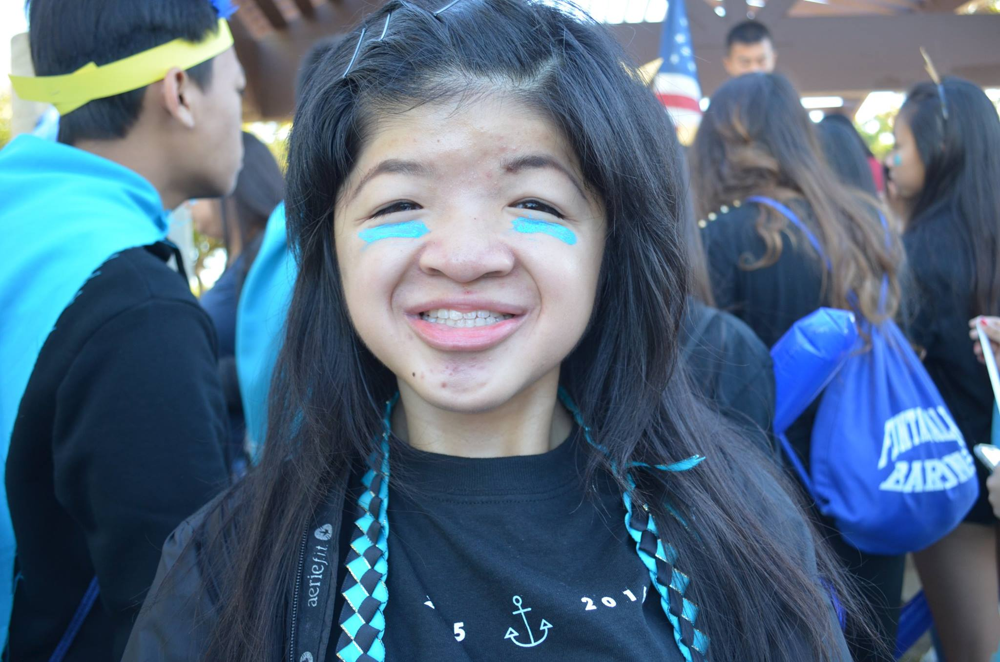

Sandy Tsan
Hometown
Westminster, California
University
University of California, Riverside
Other Profiles
Google+
Facebook
Snapchat + Instagram is @sandylions
My Favorite Movies
Super 8
Zootopia
The Incredibles
My First Website

Summary
I live in Westminster and am a full time student. I like eating, sleeping, and roasting people. :^)
I live in Westminster and am a full time student. I like eating, sleeping, and roasting people. :^)